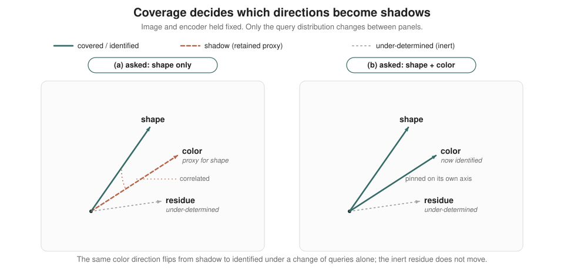

Usefulness is not modality alignment #
This is how I have come to think about many multimodal large language models (MLLMs). The museum is the visual world: rich, structured, and far larger than the set of questions we usually ask about it. The visitor requests are the language instructions used during training. The tour guide is the multimodal system, meaning the visual encoder, the projector, and the language model trained to return the right answer when prompted. The professional test is our benchmark culture.
While the failure of multimodal models on complex visual cases is widely documented, I want to argue something more structural: that next-token prediction inherently restricts a model to a query-dependent "covered subspace", leaving vast dimensions of the visual world fundamentally under-determined regardless of scale.
The guide's success is real, and so is the success of current MLLMs. They are useful, impressive, and often commercially valuable. I understand why industry is excited, since a system that answers questions about images and follows visual instructions is already a powerful tool. But as researchers we are obliged to ask a sharper question, keeping two things apart that the benchmark numbers quietly fuse together:
Does the model merely learn useful routes through the museum, or does it learn the map? Does it only retrieve answer-relevant visual information when queried, or does it acquire a representation in which vision and language are genuinely coordinated?
The distinction matters because question-answering usefulness is not the same as modality alignment. Strong performance shows that a model can route visual information into language generation when prompted. It does not, by itself, show that the model has learned a shared representational structure between the visual and linguistic worlds. The first is a conditional, query-indexed ability where the model asks, given this question, which visual features should I surface? The second is a structural property of the representation itself, independent of any particular query.
A clarification is worth making here, because the word "gap" is overloaded. There is a well-documented geometric modality gap where image and text embeddings in contrastive models like CLIP sit in separate cones, at arm's length. This is an artifact traceable to initialization and the contrastive objective rather than to any failure of understanding.1 That gap is real, but it is not what I mean by the illusion of modality alignment. A model can have a small geometric gap and still hold no map; conversely, it can have a large one and still answer well. The illusion I am pointing at is not a distance between two point clouds. It is the inferential leap from retrieval works to the collection is organized, shifting from fluent visual question answering to coordinated vision-language representation. In both the museum and the model, that inference is tempting. In both, it may be wrong.
What visual instruction tuning actually rewards #
The issue is not simply that current MLLMs are built from a visual encoder, a projector, and a language model. The deeper issue, I believe, is the form of supervision. Visual instruction tuning does not ask the model to reconstruct the visual world, to organize it, or even to align it with language. It asks the model to produce the right answer tokens given an image and an instruction, and nothing more.2
Tellingly, the projector is often treated as little more than a shape adapter for dimensionality compatibility. Even when we take its design seriously by building complex, heavy abstract mappers or structures that preserve local spatial features, the underlying problem remains.3 The projector is still trained entirely through the final instruction signal. The bridge is shaped exclusively by what is allowed to cross it.
This creates a supervision bottleneck. The image may carry rich visual structure, but the training signal reaches the model through a narrow channel consisting of a question and an answer. Anything in the image that does not change the answer is invisible to the loss. It may be present in the pixels, and even present in the visual encoder, but if it never affects the answer tokens, the objective has no reason to faithfully expose it, let alone align it with language. Under a finite capacity and compute budget, the path of least resistance is a shortcut. The model learns whatever correlates with the right answer on the training queries and ignores the rest. That is exactly the regime in which out-of-distribution generalization degrades, counterfactual reasoning becomes brittle, and hallucinations appear.
This is not a hypothetical worry; the symptoms are well-documented. The MMVP benchmark constructs pairs of images that are visually distinct yet encoded almost identically by CLIP. It shows that state-of-the-art MLLMs, including GPT-4V, fail on strikingly simple visual questions about them. They often perform well below chance while confidently hallucinating explanations.4 Crucially, the failures are systematic. The same visual patterns trip up many different models, which points to a shared cause rather than noise.
But is the information simply absent from the encoder, meaning the book was never in the museum, or is it present but unreachable because the book is on a shelf with no route to it? This is the more diagnostic question. Recent work pulls the two apart by training probes directly on features from the visual encoder, from the intermediate projection, and from the language-model output, then comparing them. The finding is sobering. Information that a probe can read off the visual features can nonetheless fail to surface in the model's actual response.5 The bottleneck, in other words, is often not perception but readout. The book is on a findable shelf, yet a route the training rewarded sends the guide back with the wrong one: the parable's wrong-cover book, a conflation that is learned rather than perceptual, and the case the coverage lock is about.
This is why I do not think strong visual question-answering performance is sufficient evidence of modality alignment. The model may have learned the conditional structure needed for answering, routing specific features given a specific question, and that is a genuinely powerful ability. But it is strictly weaker than learning a shared representational structure between vision and language.
A nonlinear-ICA reading of language supervision #
A natural objection is that this is merely a data-scaling problem, and that the next-token-prediction (NTP) paradigm itself is not to blame. It is a fair objection, and it is the field's default route. The assumption is that with more diverse data and broader query coverage, we can push the edge outward. Many results do show that scale improves performance, but it does so passively, as a by-product, rather than as something the objective is actively steering toward. To see why the edge never disappears, it helps to read language supervision through the lens of nonlinear independent component analysis (ICA).
Suppose the visual world is generated by nonlinearly mixing a set of latent factors of variation, such as objects, relations, events, and the causal structure among them. An intelligent agent's goal is to recover those latent factors so that it can reason over the recovered states rather than over raw pixels. Under the common belief that the mixing is highly nonlinear, there is a foundational obstacle. Without auxiliary structure, the latent factors are not identifiable. An infinity of equally valid solutions exists, and no amount of unsupervised data singles out the true one.6
Now the good news. Language is a highly abstract, disciplined auxiliary signal, and modern identifiability results are precisely about auxiliary variables. If an additional observed variable induces enough variation in the latent distribution, the true factors become recoverable up to simple, benign transformations.7,8 By forcing learning to follow language instructions, we push visual representations toward the way we describe and use the visual world. It is tempting to conclude that if we gather enough images and ask enough descriptive questions with human-preferred answers, we will recover more and more of the visual latents, eventually arriving at human-aligned vision.
One thing is worth being explicit about first. The identifiability theorems it leans on are proved for a particular object: a latent-variable model with a factorized prior conditioned on the auxiliary, fit by maximum likelihood. A next-token-trained vision-language model is not quite that object; it is a discriminative map from an image and a query to answer tokens. So I am using these results as a lens rather than a theorem; a way of seeing what language supervision can and cannot pin down. Whether the autoregressive objective inherits the same coverage-indexed identifiability is, to my knowledge, genuinely open. Taken as a lens, though, it has a sharp consequence, and that consequence turns on one condition.
The condition is structural rather than incidental: the identifiability guarantee holds only under what is called a variability condition. The auxiliary signal must induce sufficiently rich, independent variation across every latent direction it is meant to pin down. Language supervision satisfies that condition only over the subspace its queries actually exercise. Call this the covered subspace. The shape of the covered subspace is set by the distribution of training queries, not by the richness of the images, and not by the capacity of the encoder.
The consequence is sharper than saying some things are missed. Even with infinite data and perfect optimization, the latents are identified only up to a coarsening; any two that produce the same answers on the supported queries stay indistinguishable. And this is where the optimism breaks: the directions outside the covered subspace are not left neutrally blank, waiting to be filled in later; they are under-determined. To see why, notice what the loss can actually feel. It scores the model only on the answer tokens assigned to a query, so it depends on a visual direction only insofar as that direction changes the answer distribution on the queries we ask. Take a direction that leaves every supported answer unchanged: moving along it moves no prediction, so the loss is not merely insensitive to it—it is flat along it. The gradient is identically zero, not small; there is nothing to vanish, and nothing for more data to sharpen. Scaling steepens a slope where a slope already exists; it cannot manufacture one where the loss is constant by construction.
The single exception is the hinge of the whole argument. If such a direction happens to correlate with something the queries reward, the loss is no longer flat—but the slope it acquires points toward using the direction as a cheap proxy, not toward recovering it faithfully, and it disappears exactly on the counterfactuals where the correlation breaks. This compounds with the simplicity bias of neural networks: among predictive features the network commits to the simplest sufficient one and leaves the rest under-learned 9, and once the cheap feature suffices the gradient for the alternatives is starved 10. The correlated residual is not pruned as irrelevant; it is retained as a distribution-specific shadow. A genuinely uncorrelated residual has nothing to proxy for; it stays arbitrary, and a competent readout simply ignores it. The harm is therefore specific: it lives on directions that coverage leaves under-determined and that the training distribution happens to make correlated.
None of this competes with simplicity bias; rather, it sits one level upstream. Simplicity bias takes a correlated feature as a given and predicts that the network will prefer it. Coverage, however, determines which directions are left unconstrained and correlated for that bias to act upon. The defining lever here is the query distribution, not the images. While the traditional spurious-correlation literature locates the culprit within the visual data, the coverage reading shows that you can hold the images and encoder fixed, vary only the questions asked, and watch a direction shift from an identified signal into an exploitable shadow. The fact that a direction's fate hinges entirely on the queries is precisely what makes coverage a structural cause and not a mere co-traveler of simplicity bias.
A small example makes it concrete. Imagine a world with two latent factors, shape and color, correlated in training: round things are red, square things are blue. Now ask only about shape. A model can drive its loss to zero by reading shape; or equally by reading color, which predicts shape perfectly here. Nothing decouples the two, so nothing in the objective prefers the honest solution; color is simply the cheaper route. The tangle surfaces only off-distribution: show a blue round object, ask its shape, and a model that latched onto color answers "square". Color was not pruned as irrelevant; it was retained as a spurious proxy, and it misleads the moment the correlation breaks: a learned mistake waiting for a distribution shift, not a blank to be filled in later.

The coverage lock: why scaling relocates the boundary #
A direction can be harmless and still be uncovered. The damage, we saw, lives on the correlated residuals; an uncovered direction that correlates with nothing costs nothing today. But coverage was never a claim about today's accuracy. It is a claim about reach: which directions the queries pin down at all, and what shape the covered subspace takes. An unexercised salience gap is a real loss of coverage even on a day it produces no error, because the question is what the model could be brought to represent, not what it happens to get wrong.
So why can scaling not simply close this? It can move the boundary, but it cannot remove it. Two forces hold the boundary in place, and both are problems of coverage where the auxiliary signal is too sparse or too biased, meaning they are, in principle, movable by better data:
- (M1) Salience bias of human annotation. There is a measurable latent subspace that human annotators do not find salient and therefore silently ignore. The signal is missing not because it is unimportant, but because no one thought to annotate it.
- (M2) Counterfactual scarcity. There is very little what-if-style annotation in natural corpora. The data documents the world as it is, rarely as it could have been, yet counterfactual structure is exactly what distinguishes a causal factor from a mere correlate.
The field has, to its credit, already noticed some of the limitations. M1 invites ever more careful data curation, cleaning, and annotation. M2 invites synthetic data and augmentation tools that convert observed scenes into new what-if variants, though one might ask whether genuinely intrinsic counterfactuals can be manufactured this way at all.
Notice what the two coverage forces above have in common: both are, in principle, movable by better data, and yet the lock holds anyway. This is what I mean by the coverage lock. Two claims meet here, and they live in different likelihoods. The load-bearing one is about the model's own objective: next-token prediction, the conditional likelihood of answer tokens given an image and a query, supplies no goal-directed gradient along answer-irrelevant directions, and that silence is what leaves the residual directions under-determined. The lens adds the second: read through nonlinear ICA, those directions are non-identified latent factors, pinned down only up to a coarsening at fixed query coverage. The harm and the prescription rest on the first; the lens only supplies the name, and whether the autoregressive objective formally inherits its identifiability is, as flagged above, open. So the burden on anyone who wants out of the lock holds whether or not the lens transfers: if the objective is silent along the residual directions, no amount of data spoken in that objective's language will steer them. Change the objective, not just the data.
From the map to the territory: open questions #
If usefulness is not modality alignment, then the constructive task is to stop reading retrieval as organization. We need to start measuring, and eventually building, the map itself. I do not have these answers, but I think they are some of the more tractable open problems hiding inside the philosophy above. Here is where I would ask:
- How do we read the geometry inside the LLM? The thesis of this post is geometric in spirit, framing a covered subspace and an under-determined residue, but I have stated it abstractly. There is now a concrete vocabulary for the internal geometry of language models. Under the linear representation hypothesis, concepts appear as linear directions, categorical concepts as simplices and polytopes, and hierarchical relations as orthogonality between directions.11 The open question is whether the covered subspace is visible as a geometric object in this internal space, and whether the coverage boundary has a signature, for example, as directions along which no consistent linear readout exists. If modality alignment has a geometry, we should be able to point to it.
- Can we measure coverage directly? The idea of a supervised coverage gap should not stay a metaphor. For a given query distribution, can we estimate which visual latent directions are exercised and which are left under-determined? This would turn coverage into a quantity we can compute, compare across datasets, and use to predict where a model will fail before it actually does.
- Can we catch spurious retention in the act? If covered-but-correlated residual directions are retained as distribution-specific shadows, they should betray themselves under intervention. Concretely: take counterfactual image-text pairs that differ only along one such direction and check whether the model's answer changes when it should not, or fails to change when it should. That non-invariance is the fingerprint of a retained shadow. Crucially, this is a diagnostic rather than a training regime, which sidesteps the (M2) worry above: even synthetic edits that are not genuinely intrinsic counterfactuals are enough to expose non-invariance, and gathering data at diagnostic scale costs a fraction of what training-scale coverage would. 12 A positive result would convert a theoretical mechanism into a clean, efficient probe without paying the data-scaling bill.
- What lies beyond likelihood? If NTP supplies no pressure along residual directions, the question is which auxiliary objectives would do so in a principled rather than ad hoc way. Candidates include genuinely interventional, what-if data, reconstruction objectives that reward exposing answer-irrelevant structure, and multi-view or contrastive signals that constrain the representation from a second angle. The goal is to expand the covered subspace by design, not just by accumulating more annotation.
- Where is the expressibility frontier, and does it matter? This is the honest open problem, and it needs stating carefully now that harm has been localized. An inexpressible distinction that still correlates with some expressible query is just the simplicity-bias hazard above in new dress; one that correlates with nothing is the harmless, arbitrary case. The genuine frontier is the narrower residue that is both unsayable and uncorrelated with anything sayable, and whether that residue is even non-empty is the controversial part. It shades into a philosophical question: if some information is inexpressible in natural language, is it even useful to a human, or to a human-aligned agent? I lean toward yes. If our ambition is real visual understanding and not merely a strong tool, then the inexpressible residue is exactly where the most interesting structure may hide, which is also why I do not think the question is rhetorical.
The tour guide can be excellent for a lifetime and still never hold a map. A strong MLLM can be excellent on every benchmark we have built and still leave vision and language merely routed rather than coordinated. Recognizing the difference is the first step. Measuring it, and then closing it on purpose rather than by accident is, I believe, the real work.
References #
- W. Liang, Y. Zhang, Y. Kwon, S. Yeung, and J. Zou. Mind the Gap: Understanding the Modality Gap in Multi-modal Contrastive Representation Learning. NeurIPS, 2022. arXiv:2203.02053
- H. Liu, C. Li, Q. Wu, and Y. J. Lee. Visual Instruction Tuning. NeurIPS, 2023. arXiv:2304.08485
- J. Cha, W. Kang, J. Mun, and B. Roh. Honeybee: Locality-enhanced Projector for Multimodal LLM. CVPR, 2024. arXiv:2312.06742
- S. Tong, Z. Liu, Y. Zhai, Y. Ma, Y. LeCun, and S. Xie. Eyes Wide Shut? Exploring the Visual Shortcomings of Multimodal LLMs. CVPR, 2024. arXiv:2401.06209
- S. Chandhok, W.-C. Fan, V. Shwartz, V. N. Balasubramanian, and L. Sigal. Response Wide Shut? Surprising Observations in Basic Vision Language Model Capabilities. ACL, 2025. arXiv:2507.10442
- A. Hyvärinen and P. Pajunen. Nonlinear independent component analysis: Existence and uniqueness results. Neural Networks, 12(3):429–439, 1999. doi:10.1016/S0893-6080(98)00140-3
- A. Hyvärinen, H. Sasaki, and R. E. Turner. Nonlinear ICA Using Auxiliary Variables and Generalized Contrastive Learning. AISTATS, 2019. arXiv:1805.08651
- I. Khemakhem, D. P. Kingma, R. P. Monti, and A. Hyvärinen. Variational Autoencoders and Nonlinear ICA: A Unifying Framework. AISTATS, 2020. arXiv:1907.04809
- H. Shah, K. Tamuly, A. Raghunathan, P. Jain, P. Netrapalli. The Pitfalls of Simplicity Bias in Neural Networks. NeurIPS, 2020.arXiv:2006.07710
- M. Pezeshki, S.-O. Kaba, Y. Bengio, A. Courville, D. Precup, and G. Lajoie. Gradient Starvation: A Learning Proclivity in Neural Networks. NeurIPS, 2021. arXiv:2011.09468
- K. Park, Y. J. Choe, Y. Jiang, and V. Veitch. The Geometry of Categorical and Hierarchical Concepts in Large Language Models. ICLR, 2025. arXiv:2406.01506
- T. Le, V. Lal, and P. Howard. COCO-Counterfactuals: Automatically Constructed Counterfactual Examples for Image-Text Pairs. NeurIPS, 2023. arXiv:2309.14356